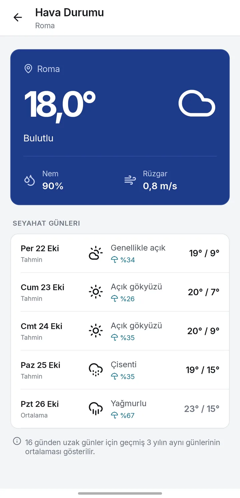
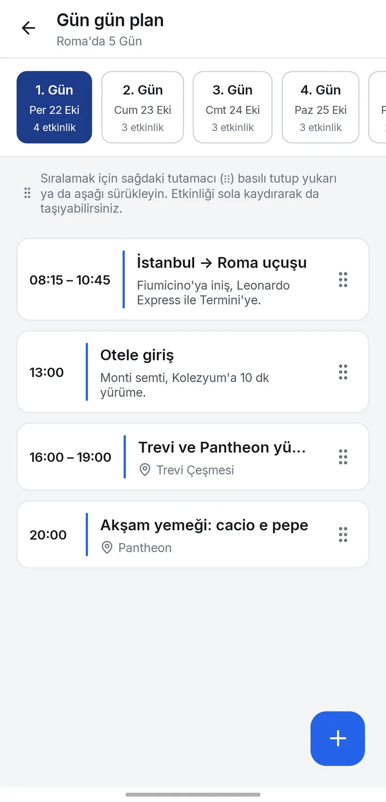
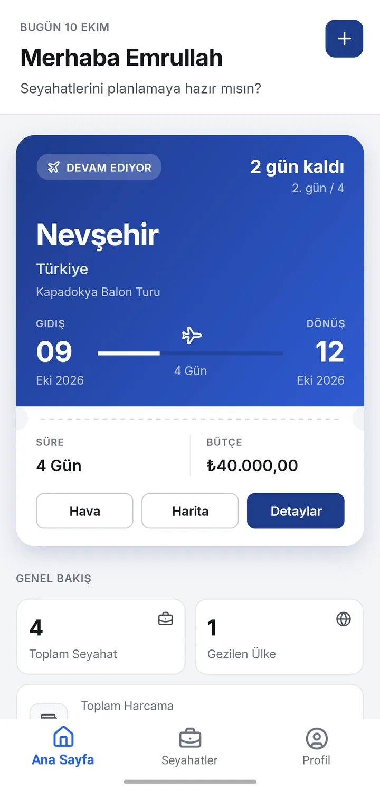
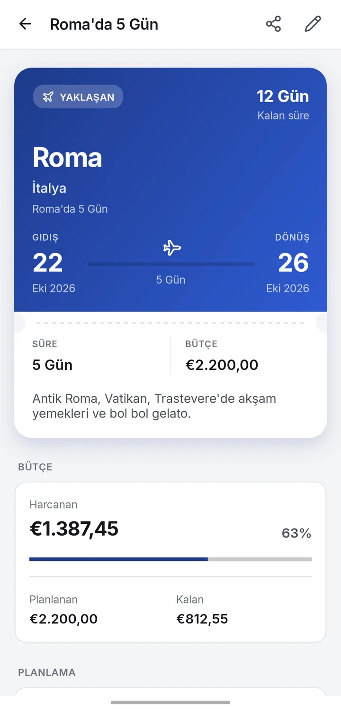
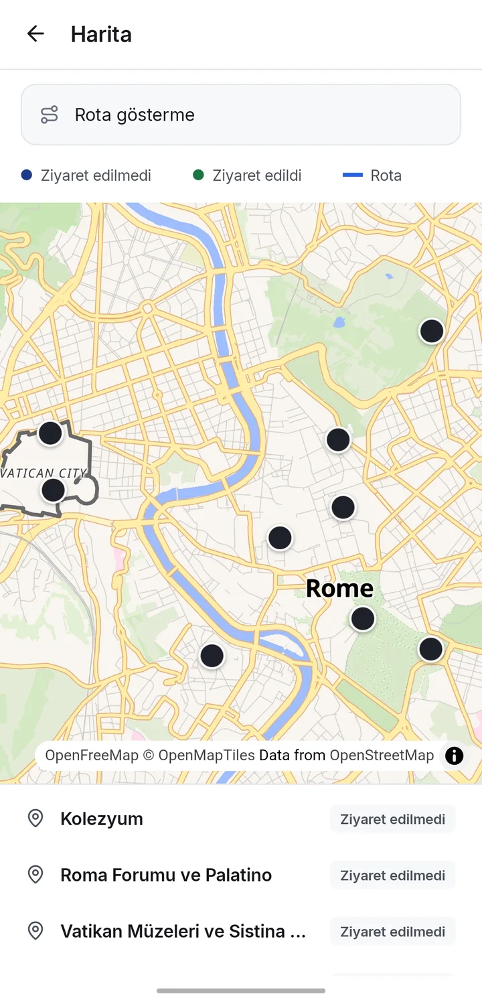
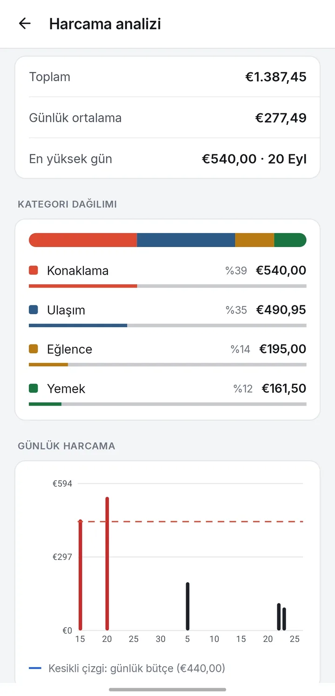
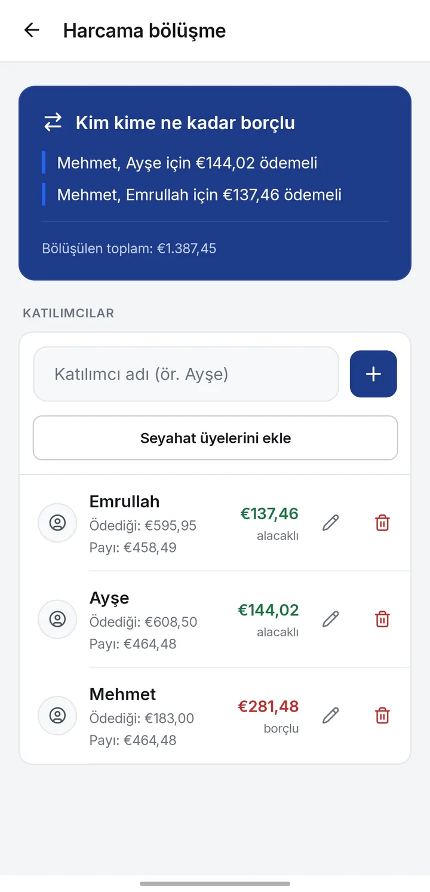
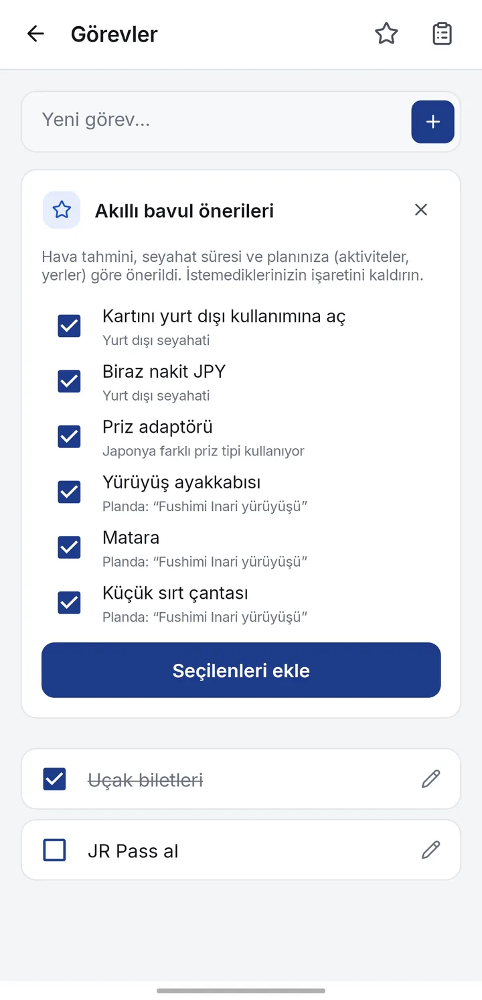
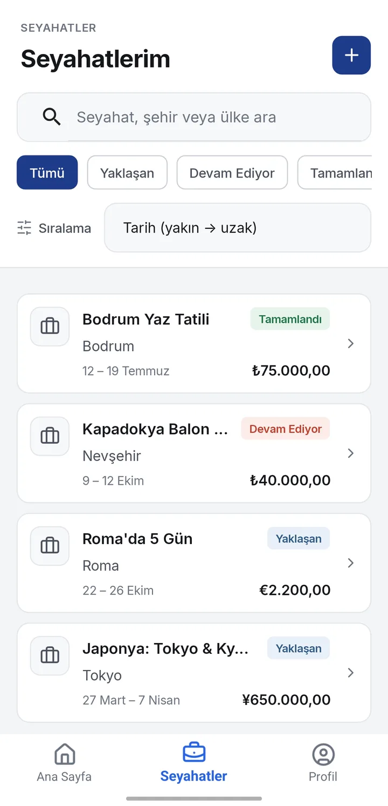
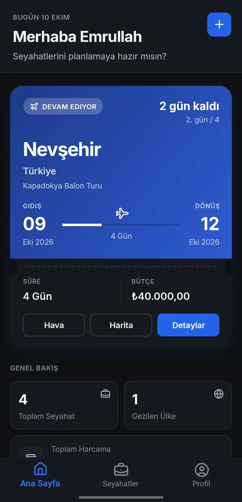

Hava durumu
Gideceğin şehrin anlık havası ve seyahatin her günü için tahmin.

Gün gün plan, harita, hava durumu, bütçe ve harcama bölüşme. Seyahatin için gereken her şey tek uygulamada.



Uçuş, otel girişi, gezi, akşam yemeği. Her etkinliği gününe ve saatine yerleştir, plan değişince sürükleyip yeniden sırala.
Kaydettiğin tüm durakları şehir haritasında gör. Hangisine gittin, hangisi sırada, bir bakışta anla.

Seyahat bütçeni belirle, harcamalarını gir. Ne kadar harcadığını, ne kadar kaldığını ve en çok neye para gittiğini uygulama göstersin.

Arkadaşlarınla çıktığın seyahatte hesap karışmasın. Kimin ne ödediğini gir, kimin kime ne kadar ödeyeceğini uygulama hesaplasın.

Gideceğin şehrin anlık havası ve seyahatin her günü için tahmin.

Hava tahmini, seyahat süresi ve planına göre yanına alman gerekenler.

Yaklaşan, devam eden ve tamamlanan seyahatleri ara, filtrele, sırala.

Arkadaşlarını davet koduyla seyahate ekle; düzenleyici ya da görüntüleyici olarak yetki ver.
Bilet, rezervasyon ve fotoğrafları seyahate ekle; internet olmadan da aç.
İstersen hesap aç; seyahatlerin internet geldiğinde diğer cihazlarınla eşitlensin.
Planı metin veya PDF olarak paylaş, tüm verini tek dosyaya yedekle.
Gece uçuşunda ya da otel odasında plana bakarken ekran gözünü almasın. Tüm ekranlar karanlık temada da aynı netlikte.

Hesap açmadan kullanabilirsin. Hesap açarsan verilerin yalnızca eşitleme ve paylaşım için Avrupa Birliği’ndeki sunucularda saklanır.
Hesapsız kullanımda tüm seyahat verilerin yalnızca kendi cihazında durur.
Hesaplı kullanımda veriler Frankfurt (Almanya) bölgesindeki sunucularda, şifreli bağlantıyla saklanır.
Reklam, analiz aracı, reklam kimliği ya da konum takibi yok. Verilerini satmıyoruz.
Seyahatlerini ya da hesabını tamamen silebilirsin. Nasıl silinir?
Ayrıntılar: Gizlilik Politikası · KVKK Aydınlatma Metni · Kullanım Koşulları
Hayır. Travel Planner şu anda ücretsizdir; uygulamada reklam ya da uygulama içi satın alma yoktur.
Uygulama henüz mağazalarda yayınlanmadı. Bu dönemde Android sürümünü yalnızca bu siteden APK dosyası olarak indirebilirsin. Mağaza sürümü yayınlandığında bu sayfada duyurulacak.
iOS sürümü gelecekte planlanıyor, henüz kesin bir tarih yok. Hazır olduğunda App Store bağlantısı bu sayfaya eklenecek.
APK’yı yalnızca bu sitedeki resmi bağlantıdan indir. Başka sitelerde, gruplarda veya mesajlaşma uygulamalarında paylaşılan kopyalar değiştirilmiş olabilir ve bunlardan sorumluluk kabul edilmez.
Hayır. Misafir olarak kullanabilirsin; bu durumda veriler yalnızca cihazında kalır. Hesap yalnızca cihazlar arası eşitleme ve seyahat paylaşımı için gerekir.
Evet. Plan, harcamalar, görevler ve eklediğin belgeler internetsiz açılır. Hava durumu, harita, yer arama ve döviz kuru gibi özellikler internet ister; hesaplı kullanımda yaptığın değişiklikler bağlantı gelince eşitlenir.
APK sürümü kendiliğinden güncellenmez. Yeni sürüm çıktığında bu siteden indirip mevcut uygulamanın üzerine kurman yeterli; verilerin korunur. Yine de güncellemeden önce Profil → Veriler bölümünden yedek almanı öneririz.
Seyahatleri uygulama içinden tek tek silebilirsin. Hesabının tamamen silinmesi için Hesap ve veri silme sayfasındaki adımları izle.
Android sürümünü hemen indir, ilk seyahatini birkaç dakikada oluştur. iPhone sürümü yolda.
Bu bir önizleme sürümüdür; hatalar içerebilir. Önemli bilgilerin için düzenli yedek al. Uygulamayı indirip kullanarak Kullanım Koşulları’nı kabul etmiş olursun; kişisel verilerinin nasıl işlendiğini Gizlilik Politikası ve KVKK Aydınlatma Metni’nde bulabilirsin. APK’yı yalnızca bu siteden indir.